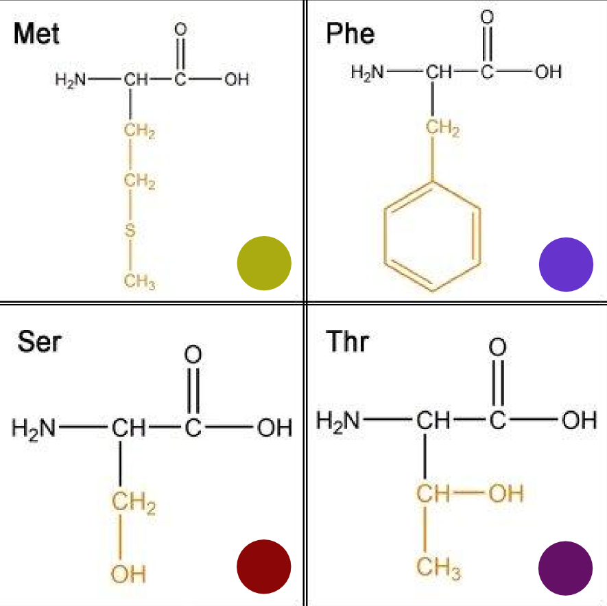
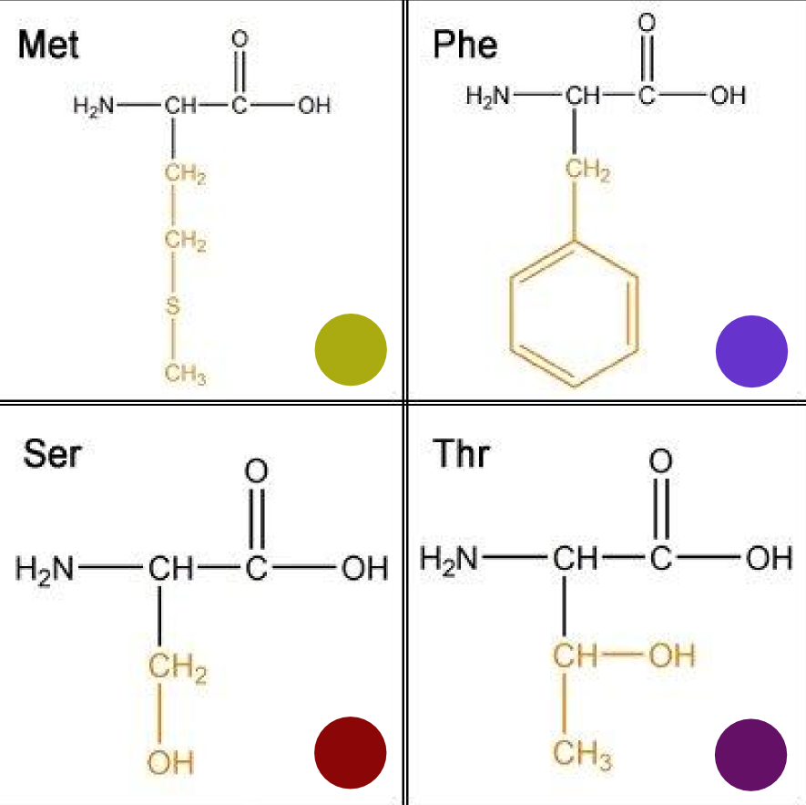

Sequence-based learning algorithms
for understanding and improving
protein characteristics
B.A. van den Berg
Sequence-based learning algorithms
for understanding and improving
protein characteristics
Eiwitten
Belangrijke bouwstenen in een cel

Illustratie van de doorsnede van een klein stukje Escherichia coli cel - door David Goodsell
Macromoleculen
Kettingen opgebouwd uit 20 verschillende aminozuren
 

Opgevouwen kettingen
Watervrezende kern, waterlievend oppervlak
Centraal dogma van de moleculaire biologie
DNA RNA Eiwit
Enzymen
Eiwitten met veel praktische toepassingen

Phosphoglucose Isomerase - door David Goodsell
Enzymen spelen een belanrijke rol bij industriële productie
Voedsel, drank, textiel, leer


Wasmiddelen
Enzymen knippen vuil en vet kapot

Papier en pulp
Enzymen bleken, verwijderen inkt, verbeteren structuur

Tweede generatie biobrandstoffen
Enzymen zetten biomassa om in ethanol


Schimmels
Kleine enzymfabrieken

Aspergillus niger - http://fungi.myspecies.info
Schimmels secreteren veel enzymen
Voor het verteren van voedsel buiten de cel
Schematische weergave eiwitsecretieroute
Fermentor
Optimale condities creëren voor maximale enzymproductie

Optimalisatie van de eiwitproductie
Eiwit A geeft een hogere concentratie dan eiwit B
waarom?
Classificeren I
Onderscheid maken tussen appels en peren

Meten is weten
Nog meer meten is nog meer weten

Classificator trainen

Classificator

Classificator testen

Classificeren II
Onderscheid maken tussen eiwitten met hoge en lage productieniveau's in Aspergillus niger
Structuureigenschappen
Lastig door beperkte beschikbaarheid structuurdata
Sequentie-eigenschappen
Sequenties zijn er in overvloed en zijn rijk aan informatie
>An11g03200 NDYRPSYHFTPDQYWMNEPNGLIKIGSTWHLFFQHNPTANVWGNICWGHATSTDLMHWAHKPTAIADENG VEAFTGTAYYDPNNASGLGDSANPPYLAWFTGYTVSSQTQDQRLAFSVDNGATWTKFQGNPIISTSQEAP HDITGGLESRDPKVFFHRQSGNWIMVLAHGGQDKLSFWTSADTINWTWQSDLKSTSINGLSSDITGWEVP DMFELPVEGTEETTWVVMMTPAEGSPAGGNGVLAITGSFDGKSFTADPVDASTMWLNNGRDFDGALSWVN VPASDGRRIIAAVMNSYGSNPPTTTWKGMLSFPRTLSLKKVGTQQHFVQQPITELDTISTSLQTLENQTI TPGQTLLSSIRGTALDVRVAFYPDAGSVLSLAVRKGASEQTVIKYTQSDATLSVDRTESGDTSYDPAASG VHTAKLEEDDTGLVSIRVLVDTCSVEVFGGQGEAVISDLIFPSDSSDGLALEVTGGNAVLQSVDVRSVSL E
Aminozuurcompositie
Hoeveel procent van elk aminozuur zit er in een eiwit

Eiwitproductie voorspellen
Eiwitten selecteren die potentieel geschikt zijn voor industriële productie
Belangrijke eigenschappen leren
Welke aminozuren hebben positieve en negatieve invloed op het productieniveau van het enzym
Omgekeerd classificeren
Een duwtje naar de andere kant van de beslissingsgrens
Eiwit herontwerp
2 enzymen herontwerpen - 4 ontwerpen per enzym
5 tot 45 aangepaste aminozuren

5 tot 45 aangepaste aminozuren
Esterase herontwerp met 5 aangepaste aminozuren
Inulinase herontwerp met 10 aangepaste aminozuren
Lab resultaten
Tot tienvoudige extracellulaire concentraties